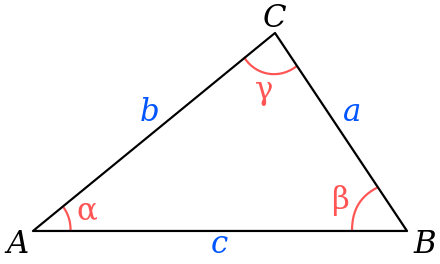
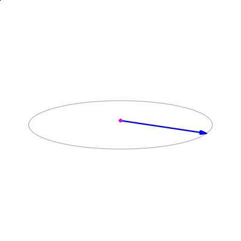
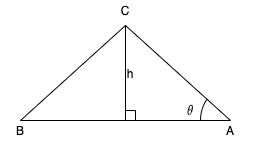
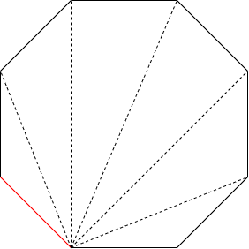
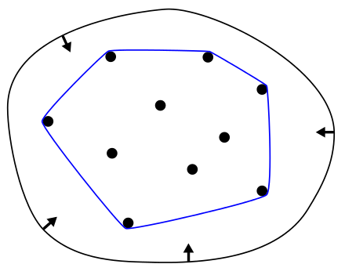
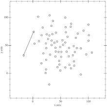

Geometry(2D)¶
To solve geometry problems in 2D with computers, we need some basic knowledge about geometry relationships and equations.
Notion¶
Point¶
In Cartesian Coordinate System, we use coordinates \((x, y)\) to represent a point, for example, \((2, 3)\), \((-7, 0)\).
1 2 3 4 | |
Vector¶
The representation of vector is like point, we use \((x, y)\) to represent a vector.
1 | |
Line¶
There are many variant ways to write the equation of a line:
- Normal form: \(ax + by + c = 0\);
- Slope-intercept form: \(y = kx + b\);
- Intercept form: \(\frac{x}{a} + \frac{y}{b} = 1\);
Consider that we just want to know where the line locates and how the line slopes, we can use the form of:
- a point on line and the unit vector of the line.
1 2 3 4 | |
Line Segment¶
We use two end points \((x_1, y_1), (x_2, y_2)\) of the line segment to represent it.
1 2 3 4 | |
Polygon¶
We record all vertices of the polygon to represent it.
1 2 3 | |
Curve¶
Some special curves like Bezier curve and Bell curve, we use its analytical expressions to represent them. For simple curve like circle, we can use the central point and radius of the circle to represent it.
1 2 3 4 | |
Basic Equations¶
Triangle¶
Law of sines¶

where:
- \(a, b, c\) are the lengths of the sides of a triangle;
- \(A, B, C\) are the opposite angle of \(a, b, c\);
- \(R\) is the radius of the triangle's circumcircle.
Law of cosines¶

Vector¶
Addition and Subtraction¶
The sum of two vectors is a third vector, represented as the diagonal of the parallelogram constructed with the two original vectors as sides. As for subtraction, set the second vector coordinates with its opposite number and use the same equation.

1 2 3 4 5 6 7 8 9 10 11 12 13 14 15 | |
Dot Production¶
The dot product, also called the scalar product, is a scalar real number equal to the product of the lengths of vector \(|\vec{a}|\) and \(|\vec{b}|\) and the cosine of the angle \(\theta\) between them:
We use dot product to:
- check if the two vectors are perpendicular:
- calculate the angle between two vectors:
The result of dot product is calculated as:
1 2 3 4 5 6 7 8 9 10 11 | |
Cross Production¶
The cross product, also called the vector product, is a third vector \(\vec{c}\), perpendicular to the plane of the original vectors. The magnitude of \(\vec{c}\) is equal to the product of the lengths of vectorss \(\vec{a}\) and \(\vec{b}\) and the sine of the angle \(\theta\) between them:
We can find the direction of cross product with right-hand rule:

The cross product \(\vec{c} = \vec{a} \times \vec{b}\) (vertical, in purple) changes as the angle between the vector \(\vec{a}\)(blue) and \(\vec{b}\)(red) changes. The cross product is:
- always orthogonal to both vectors;
- has magnitude \(0\) when the vectors are parallel;
- has maximum magnitude \(|\vec{a}||\vec{b}|\) when they are orthogonal.

The result of dot product is calculated as:
1 2 3 | |
Rotation of Vector¶

Let's say that we have a point \((x_1, y_1)\), which also defines the vector \(\vec{a_1}\). The angle of \(\vec{a_1}\) is \(\beta\). The vector \(\vec{a_1}\) has length \(L\). We rotate this vector anticlockwise around the origin by \(\alpha\) degrees, the new vector \(\vec{a_2}\) has coordinates \((x_2, y_x)\). The length \(L\) is not changed, so we have:
$$ y_1 = L \sin{\beta} $$ As we rotate \((x_1, y_1)\) by angle \(\beta\) to get \((x_2, y_2)\), the new vector \(\vec{a_2}\) has:
Combine all these equations above we have:
So the result of rotation of vector is:
1 2 3 4 | |
Basic Problems¶
Area of Triangle¶

When we know the base and height, the area of triangle is:`
as we have:
and
The area of triangle can be calculated:
1 2 3 | |
Area of Polygon¶

We can divide a polygon to multiple triagnles and calculate the sum of their areas.
1 2 3 4 5 6 7 8 9 | |
Point on Line Side¶
We can use the cross product to check a point on wihch side of the line: if the cross product is
- \(> 0\), point is on line left;
- \(< 0\), point is on line right.
1 2 3 | |
Point and Line Distance¶
The result of cross product is the area of parallelogram, we divide this by parallelogram's base to get height, which is the distance from point to line.
1 2 3 4 5 | |
Point and Line Segment Distance¶
If the point is not in the rectangle of line segment, we should calculate the distance from point to nearest line segment point; otherwise we can use the line distance to get the result.
1 2 3 4 5 6 7 8 | |
Point on Line Segment¶
If a point is on line segment, it should meet:
- the point is on the line;
- the point is between two end points of line segment.
1 2 3 4 5 6 7 8 | |
Point in Polygon(PIP)¶
In computational geometry, the point in polygon problem asks whether a given point in the plane lies inside of a polygon. There are two methods to check if the point is in polygon:
- Ray casting
- Winding number
Ray casting algorithm¶
One simple way of finding whether the point is inside a simple polygon is to test how many times a ray, starting from the point in any fixed direction, intersects the edges of the polygon. If the ray intersects the polygon's edge:
even numbertimes, the point is outside the polygon;odd numbertimes, the point is inside the polygon.
There are some special cases we need to deal with:
- ray intersects the conves vertex(case 1), which should count once;
- ray intersects the concave vertex(case 2), which should not be counted;
- ray intersects the edge of polygon, which should not be counted.
To simplify the logic, we think that a point is in a polygon if:
- the point is on the edge;
- the ray from point to long long right has intersetion with the edge.
While calculating the intersection with the edge, we check:
- the point is between the edge in y direction:
p0.y - p.y != p1.y - p.y - the intersection size:
p0.y < p1.y ? cross_product > 0 : cross_product < 0
1 2 3 4 5 6 7 8 9 10 11 12 13 14 | |
Winding Number Algorithm¶
Winding number algorithm links the point to all points of the polygon and calculate the sum of all the angles, if the angle is:
- \(\ne 0\), the point is not in polygon;
- \(= 0\), the point is in polygon.
1 2 3 4 5 6 7 8 9 10 11 12 | |
Line Segment Intersection¶
There are three relationships between two line segments:
- no intersection;
- intersection;
- overlaps.
And as for the intersection case, we can use following methods to calculate its intersection point:

We assume that the intersection point is \(O\), the area of the \(\triangle ABC\) and \(\triangle ABD\) can be calculated by:
As we have known that \(\triangle ABC\) and \(\triangle ABD\) have the same base \(AB\):
And according to triangle rules:
Finally:
1 2 3 4 5 6 | |
Convex Hull¶

The convex hull of a set of points is defined as the smallest convex polygon, that encloses all of the points in the set. Convex means that the polygon has no coner that is bent inwards.
A usefull way to think about the convex hull is the rubber band analogy. Suppose the points in the set were nails, sticking out of a flat surface. Imaging now, what would happen if you took a rubber band and stretched it around the nails. Trying to contract back to its origin length, the rubber band would enclose the nails, touching the ones that stick out the furthest from the centre.
Andrew's monotone chain convex hull algorithm¶

Andrew's algorithm constructs the convex hull of a set of 2D points in \(O(NlogN)\) time.
It does so by first sorting the points lexicographically (first by x-coordinate, and in case of a tie, by y-coordinate), and then constructing upper and lower hulls of the points in \(O(n)\) time.

The process is mainly:
- Sort the points by its x-coordinate, if the x-coordinate is equal, by y-coordinate;
- Start from the leftmost point, if the new point is higher(use
cross product) than last point in stack, we pop the last; if not, we push the new point to stack. After this, we can get the upper hull. - We remove all points used in upper hull, and do the same thing as step 2 in reverse order to get the lower hull.
- Return all points in upper and lower hull.
1 2 3 4 5 6 7 8 9 10 11 12 13 14 15 16 17 18 19 20 21 22 23 24 25 26 27 28 29 30 31 32 33 34 35 36 37 | |